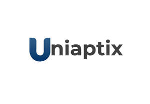
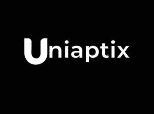

Trade Mark Journal No.2025/044 31 October 2025
UK00004283371 24 October 2025 (35,39,41)
Mark 1

Mark 2
Mark 3

- Class 35
- Career advisory services (other than education and training advice); Personnel recruitment; Recruitment (Personnel -); Recruitment advertising; Recruitment services; Recruitment consultancy services; Provision of advice relating to the recruitment of graduates; Provision of information relating to recruitment; Headhunting services; Employment counselling and consultancy services; Consultancy relating to advertising and promotion services; Advertising, marketing and promotional consultancy, advisory and assistance services.
- Class 39
- Arranging for travel visas, passports and travel documents for persons traveling abroad; Arranging for travel visas and travel documents for persons travelling abroad.
- Class 41
- Education; Vocational education; Education and training; Education services; University education services; Education, teaching and training; Vocational education and training services; Training and education services; Education and training services; Education and instruction services; Career counseling [education]; Education information; Information (Education -); Adult education services; Education and training consultancy; Further education; Technological education services; Management education services; Educational services provided by institutes of higher education; Education information services; Educational and teaching services; Career counselling [training and education advice]; Career advisory services (education or training advice); Education services relating to industry; Educational services provided by institutes of further education; Organization of education competitions; Organization of competitions [education or entertainment]; Competitions (Organization of -) [education or entertainment].
Uni Application Portal Ltd